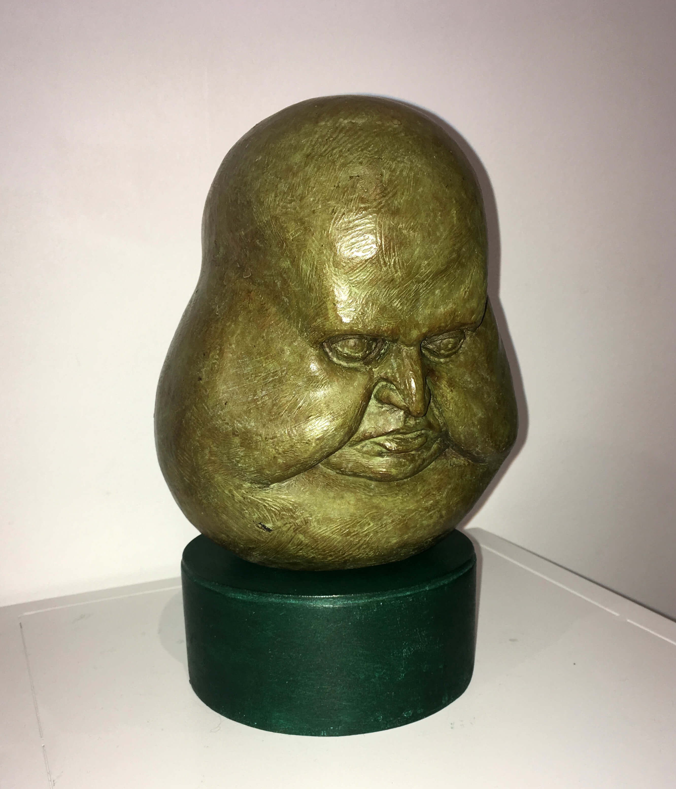
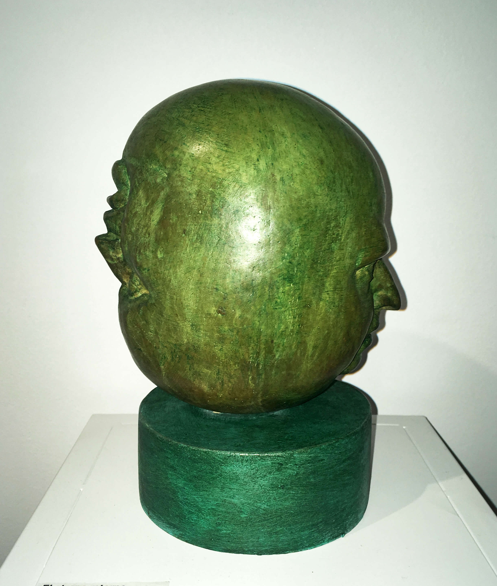
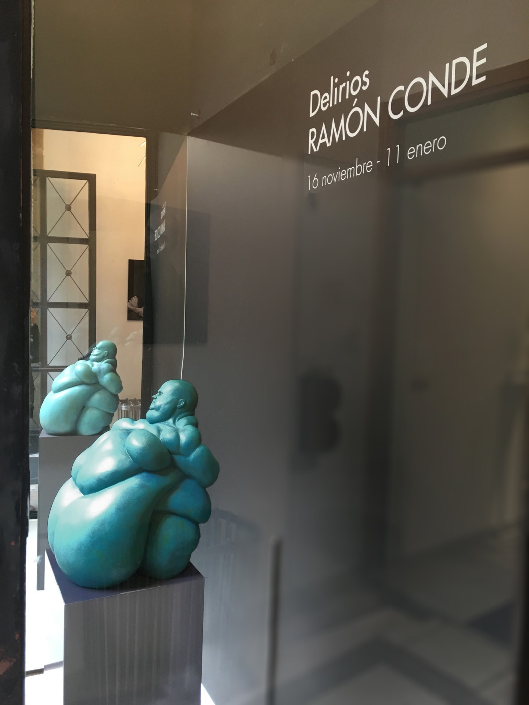
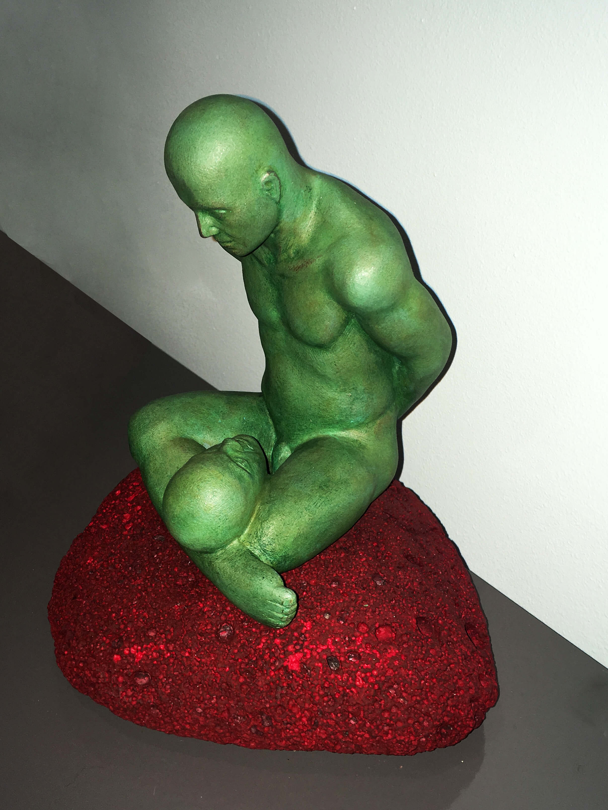
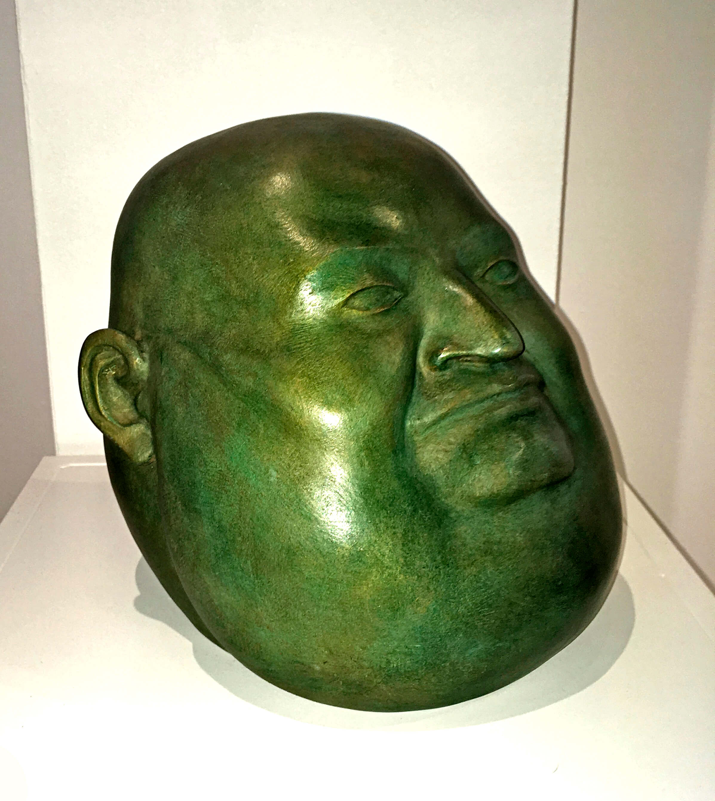
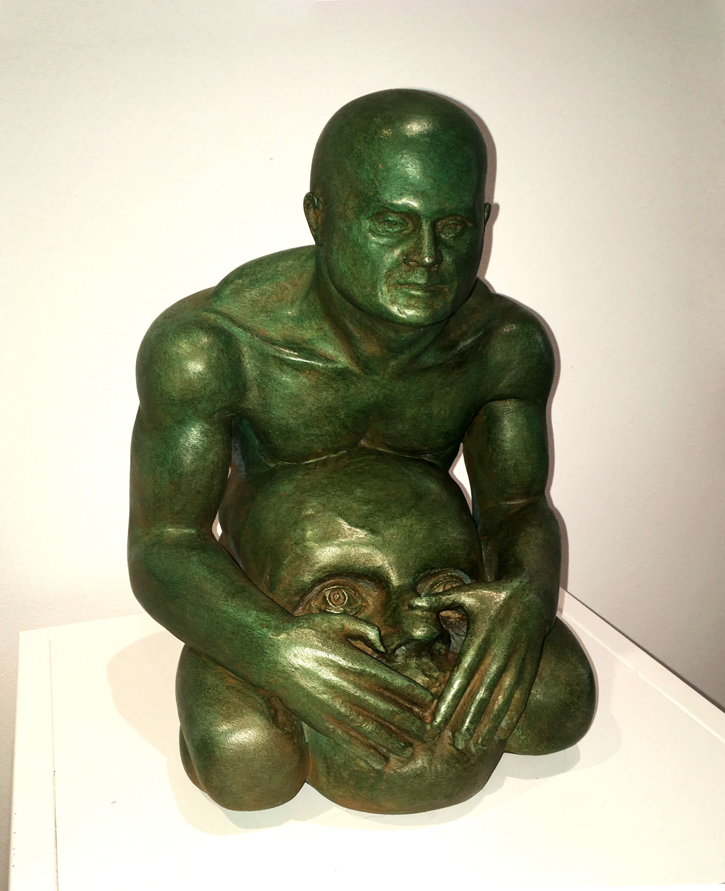
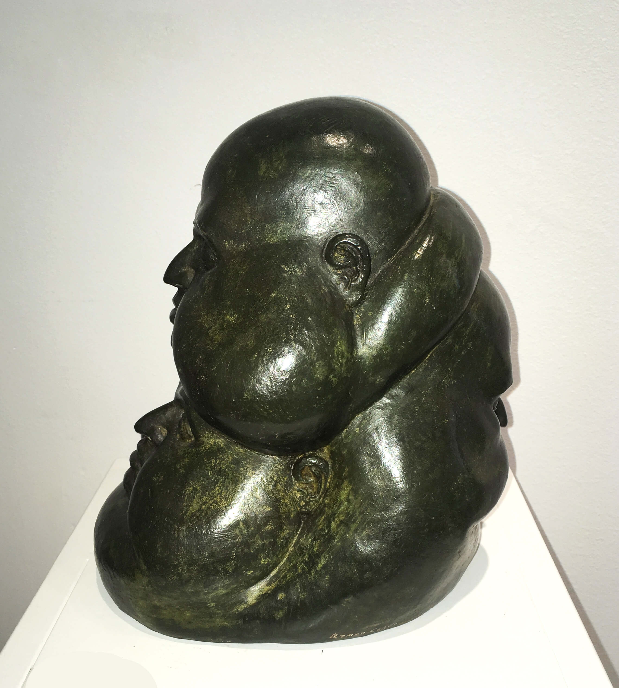
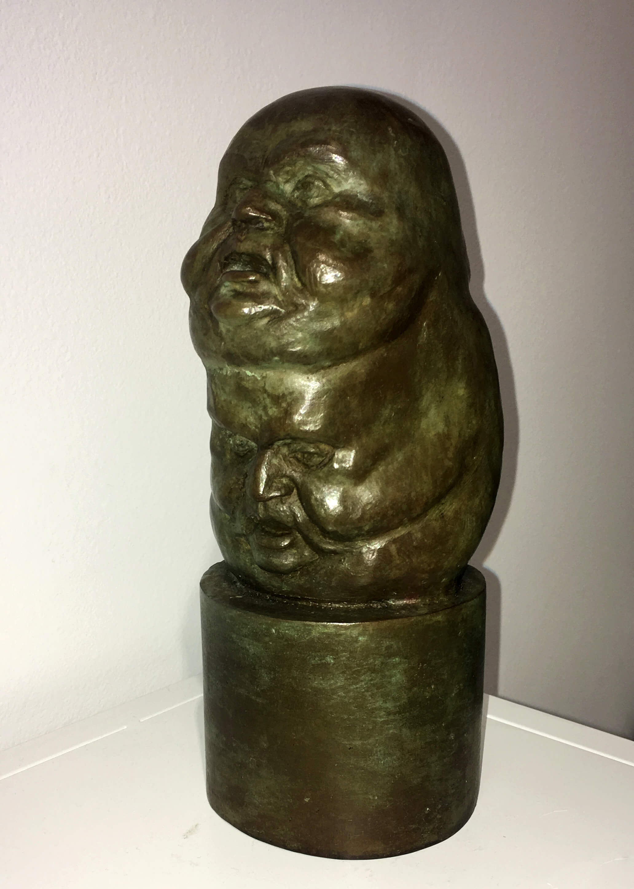
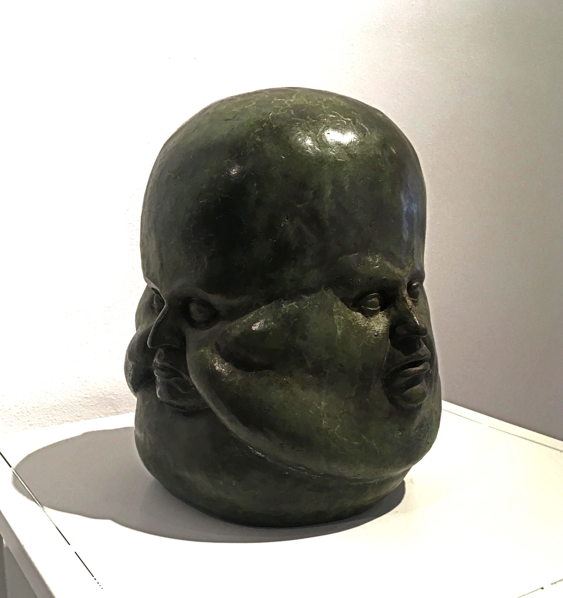

Exhibition held at the Luísa Pita Art Gallery.
In this sample, the interest lies in placing emphasis on the subconscious or on what is most accessible to it: dreams, delirious ../images and, in general, all that content that can skip rational control. The duality of feelings and ideas is habitual, perhaps in our very essence, since we possess two brains and, normally, do not go in unison, but usually express opposite feelings and positions.
In many of the works there is no reference to the individual, but only to his mind and his delusions. They are ../images like those of our dreams, in which there is nothing definite, mixing the real and the oneiric. Another series of works of the exhibition are devoted to the dream, to the multiple voices and characters that are part of them and that seem to elevate the sleeper on this emotional microcosm. In another series are the characters who take center stage, as the man who speaks with his head.

Escalada simétrica
50 x 45 x 25 cm/u

El eterno retorno
16 x 11,5 x 11,5 cm.


Los Miedos
38 x 34 x 49 cm.

Los Sueños
23,5 x 30,5 x 26 cm.

Meditación
18 x 15 x 13 cm.

Día - Noche
25 x 23 x 27 cm.


Tapando la boca
30 x 23 x 20 cm.

Tres ideas
25 x 17 x 22 cm.


Múltiples ideas
23 x 20 x 19 cm.